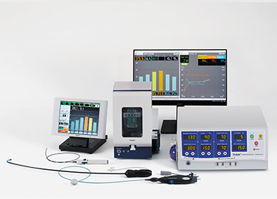

技術部署
医薬・医療関連技術部署
医薬・医療関連技術部署は、非臨床試験および臨床試験に用いられる医薬品および医療機器の製造、臨床試験の実施、承認申請対応、本格生産のための技術開発を担い、ライフイノベーションの中核である医薬・医療事業の基盤強化、グローバル展開を推進しています。
HBCグローバル事業室
不整脈の一種である心房細動の焼灼治療に用いられるホットバルーンカテーテルシステム（カテーテル、シース、高周波発生装置、食道冷却装置）の開発・改良から販売、海外展開まで、ホットバルーン事業を一貫して推進する業務を担当しています。
臨床開発部
新規の医薬品・医療機器および既承認製品の新適応や新剤型・改良等に係る臨床開発、厚生労働省および海外規制当局への製造販売承認申請対応を担当しています。
医薬CMC技術部
医薬品のグローバル開発を推進するためのCMC関連の開発戦略・計画の作成、非臨床試験および臨床試験に用いる原薬および治験薬のGMP基準に基づく製造、承認申請関連文書の作成、商用生産のための製造技術開発と技術支援を担当しています。
※１ CMC（Chemistry, Manufacturing and Control）：医薬品に関する原薬、製剤の「化学、製造、品質管理」
臨床開発推進室
臨床試験データの管理、有効性と安全性に関する解析、臨床試験の品質管理（QC）、および臨床試験全般の総務を担当しています。
医療材技術部
慢性腎不全を対象とした人工腎臓、救急集中治療分野でのエンドトキシン吸着カラム、カテーテル、コンタクトレンズなど東レの医療機器全般の技術開発の中核として、試作改良・プロセス開発から工場増設増能力まで生産技術開発業務を担当しています。

ホットバルーンカテーテルシステム
カテーテル、シース、高周波発生装置、食道冷却装置の医療機器から構成されます。

既存治療抵抗性の痒みを抑える世界初の選択的オピオイドκ（カッパ）受容体作動薬レミッチ®OD錠2.5μg（口腔内崩壊錠）
※ 「レミッチ®」は鳥居薬品の登録商標です
経口投与可能なプロスタサイクリン（PGI2）誘導体の徐放性製剤ケアロード®LA錠 60μg
吸着水に着目した膜表面改質技術によって、生体適合性と透析性能の向上を目指したモイストタイプ人工腎臓
トレミキシン® は、敗血症の原因物質であると考えられるエンドトキシンを除去する血液浄化器